سجلك الصحي
ذاكرتك الصحية في مكان واحد
ذاكرتك الصحية في مكان واحد
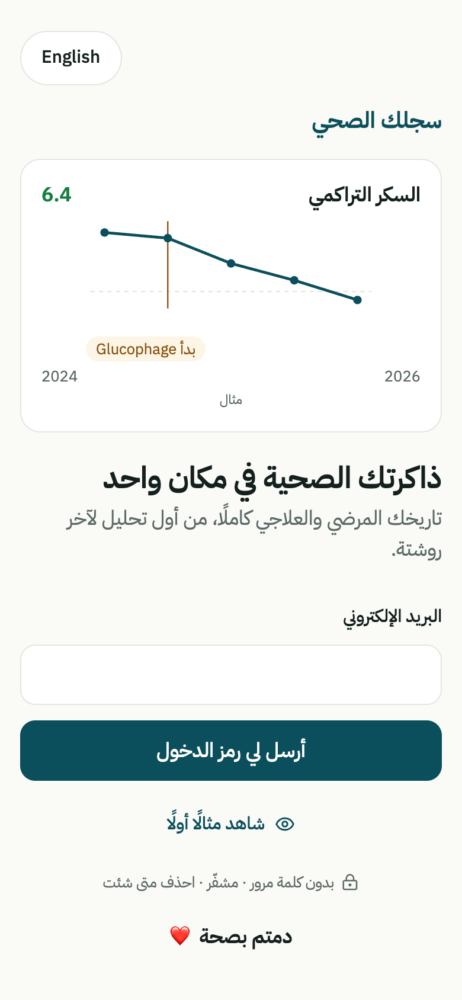
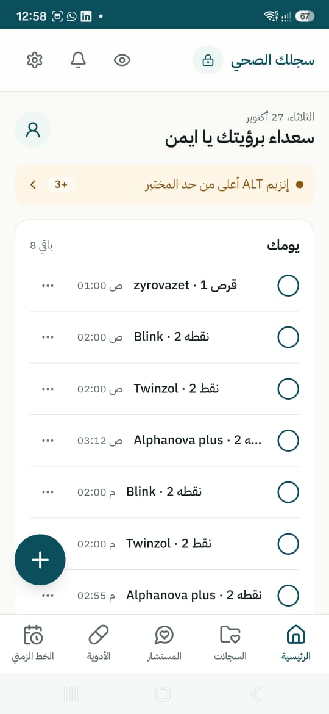
تاريخك المرضي والعلاجي كاملًا، من أول تحليل لآخر روشتة.
دمتم بصحة ❤
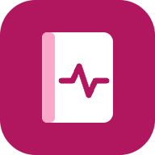
سجلك الصحيثلاث قيم أساسية:
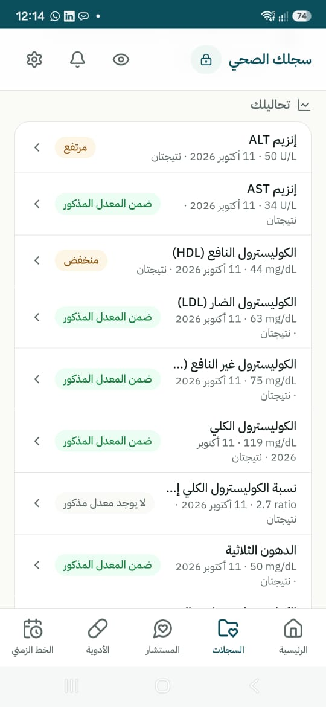
ولكل من تحب: ذاكرة صحية منفصلة لكل فرد في العائلة.
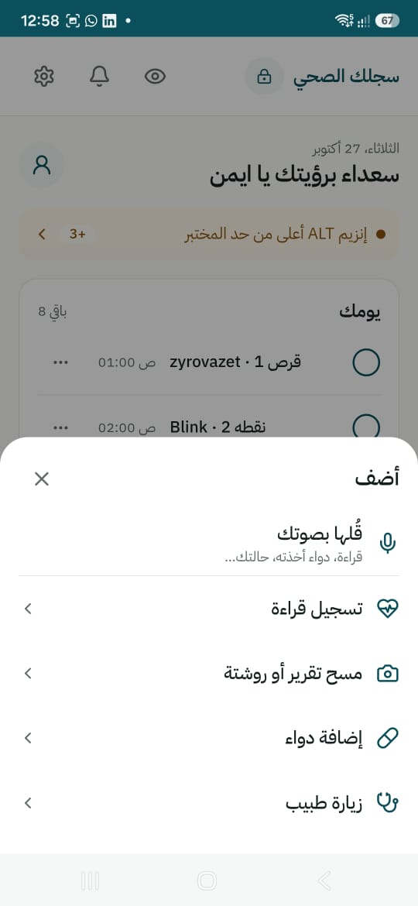
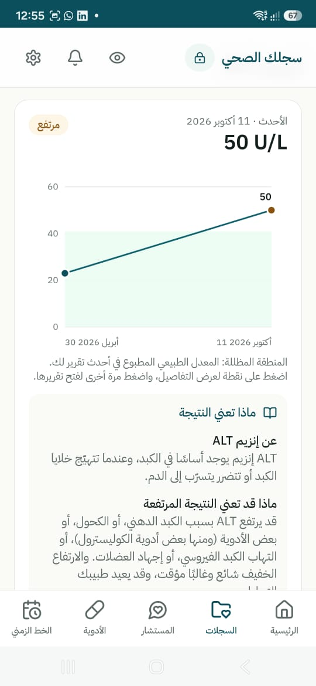
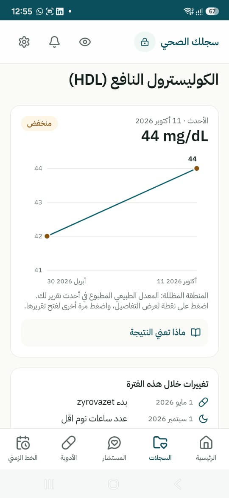
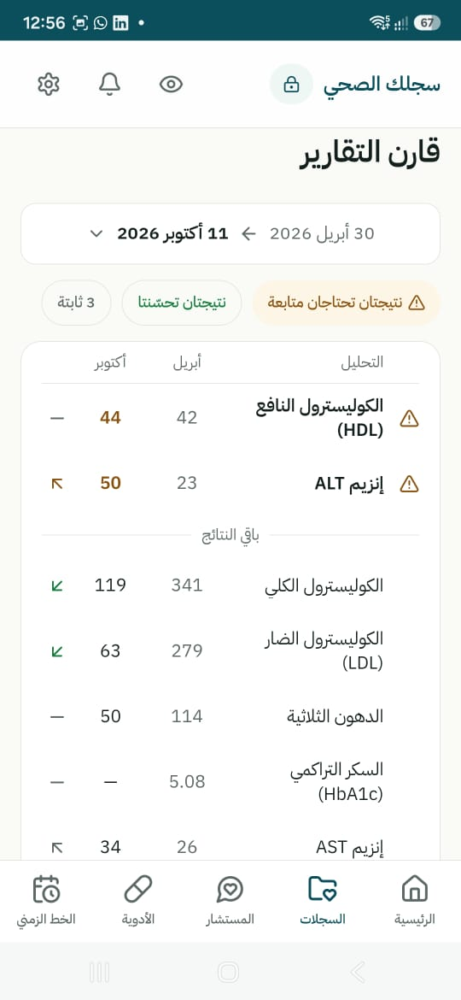
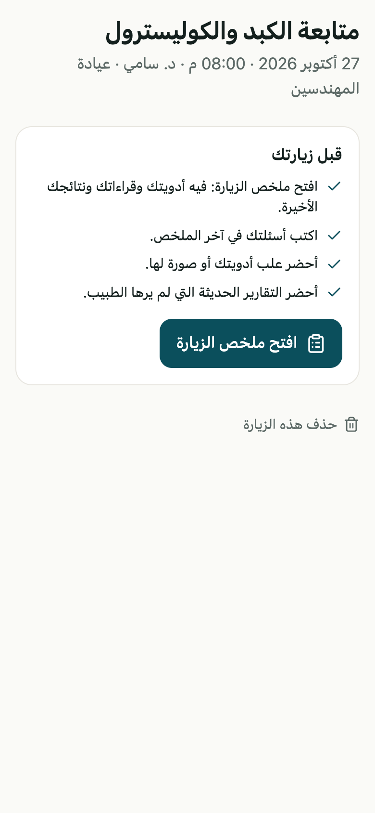
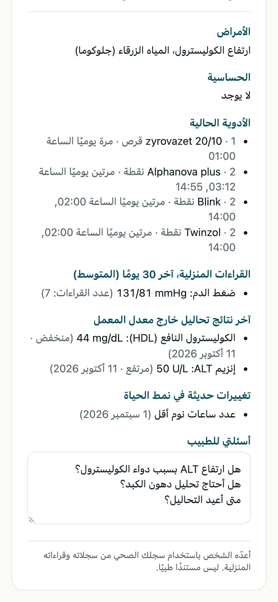
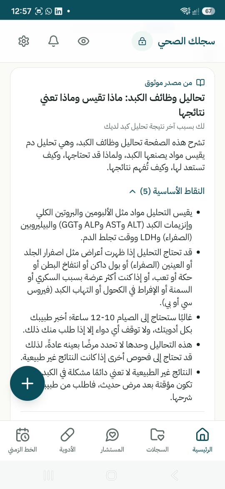
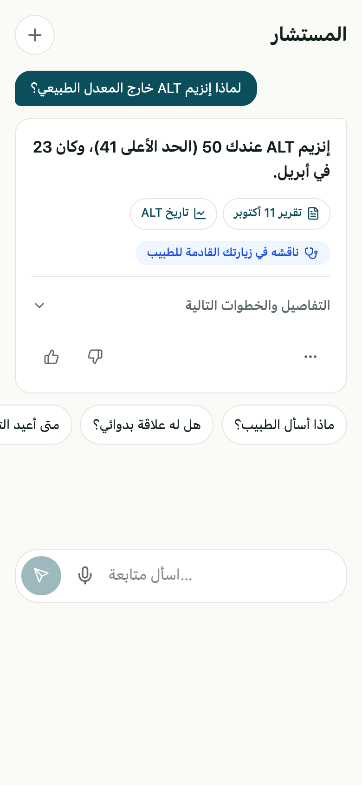
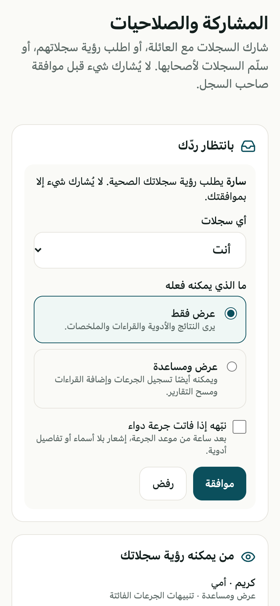
تواصل معنا لنبدأ معًا.
health-journal.vercel.app
دمتم بصحة ❤